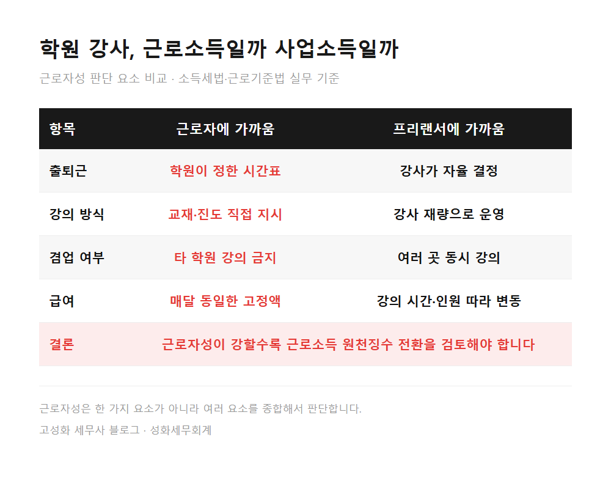
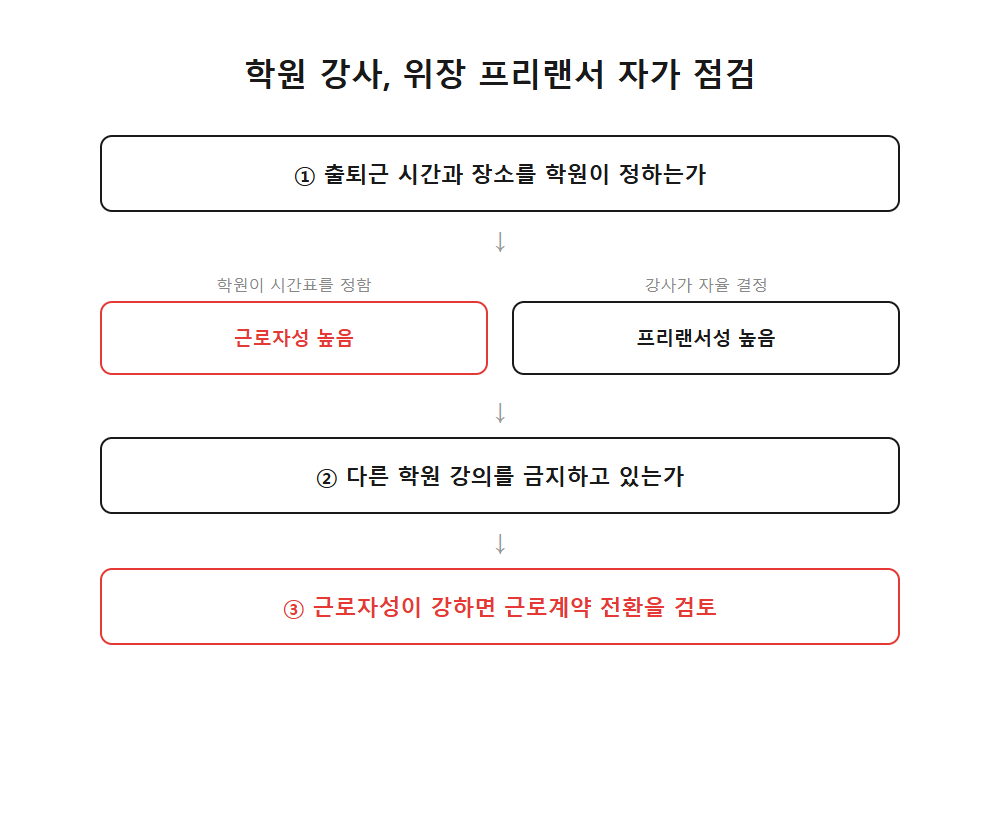
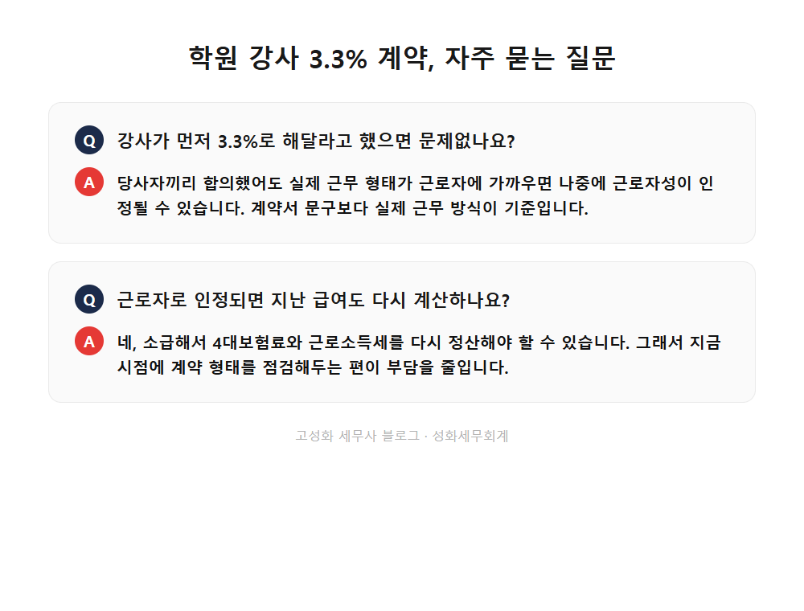

학원 강사 3.3% 위장 프리랜서 72곳 적발 기준

지난주에 학원을 운영하시는 원장님이 강사 계약서 뭉치를 들고 사무실에 오셨습니다.
뉴스에서 위장 프리랜서 단속 이야기를 보셨다고, 지금 강사님들과 맺은 계약이 괜찮은 건지 궁금해하셨습니다.
저는 상담을 하다 보면 이런 질문을 꽤 자주 받습니다. 학원뿐 아니라 프리랜서 형태로 사람을 쓰는 업종이라면 다들 한 번쯤 걸리는 부분입니다.
이 글을 보고 계신 분은 아마 이런 상황이실 겁니다. ①강사에게 3.3%로만 급여를 지급해오신 분, ②최근 위장 프리랜서 단속 뉴스를 접하고 불안해지신 분, ③계약서를 근로계약으로 바꿔야 하는지 고민 중이신 분.
- 3.3% 사업소득과 근로소득, 뭐가 다른가
- 최근 단속이 강해진 이유
한눈에 보기



자주 묻는 질문
강사가 먼저 3.3%로 해달라고 했으면 문제없나요?
합의했더라도 실제 근무 형태가 근로자에 가까우면 나중에 근로자성이 인정될 수 있습니다. 계약서 문구보다 실무가 기준입니다.
근로자로 인정되면 지난 급여도 다시 계산하나요?
네, 소급해서 4대보험료와 근로소득세를 다시 정산해야 할 수 있습니다. 그래서 지금 계약 형태를 점검해두는 편이 부담을 줄입니다.
강사 전원을 한 번에 근로계약으로 바꿔야 하나요?
아닙니다. 강사마다 근무 형태가 다르면 판단도 각자 달라집니다. 강사별로 출퇴근·겸업 여부를 나눠서 봐야 합니다.
정리하면
3.3% 계약 자체가 위법은 아닙니다. 다만 근로자에 가까운 강사가 섞여 있다면 지금 한 번 점검해둘 필요가 있습니다.
이미 몇 년째 이런 식으로 계약해왔다면 이제 와서 바꾸기엔 늦은 것 같다고 느끼실 수 있습니다.
하지만 지금부터 정리해도 소급 부담을 줄일 수 있는 경우가 많습니다. 강사별 근무 형태를 적은 메모만 가지고 오셔도 됩니다.
편하게 문의 주세요.
본문 전체와 근거 조문은 블로그에서 확인하실 수 있습니다.